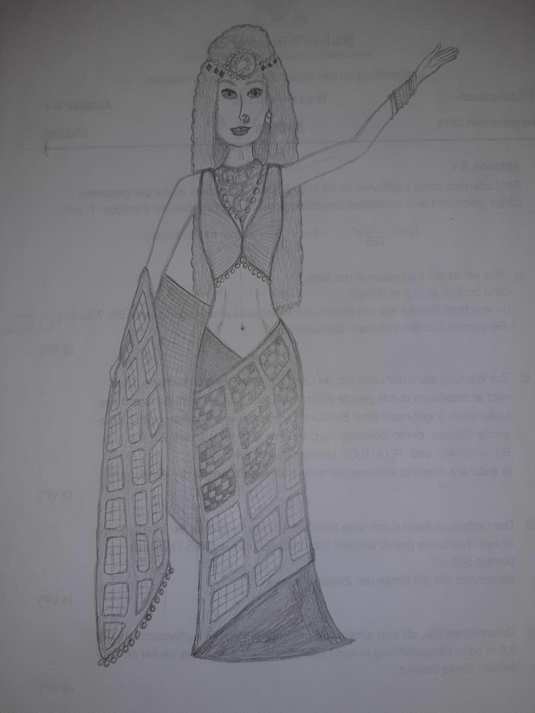

Also ich bin noch kein Designer, aber gezeichnet habe ich immer gerne...
Hier sind ein paar Bilder, die ich als Zeitvertreib im Unterricht im Gymnasium gezeichnet habe.
Weil ich noch so viele Zeichnungen habe, aber nicht so viele Fotos machen will, gibts hier noch ein Video.
So... also bevor du dir die pdf anschaust und eventuell ein paar Zeilen lesen wirst... muss ich das hier verteidigen.
Dieses Dokument ist aus dem Jahr 2011. Zu der Zeit war ich 14. UND das ist die unbearbeitete Version.
Ich hatte alle Seiten mal überarbeitet, nur ist danach mein Laptop abgestürtzt und da ich nicht nochma 40 Seiten überarbeiten wollte,
und ich hatte die 40 auf 60 gebracht gehabt, so viel hatte ich überarbeitet, habe ich die Datei einfach nie wieder geöffnet und so gelassen.
14 jährige Esra war sehr schnell frustriert und ja... 60 Seiten innerhalb paar Sekunden weg.
Der einzige Grund, weshalb ich das hochlade ist, dass ich weiß, niemand wird sich die Zeit nehmen,um das alles durchzulesen XD